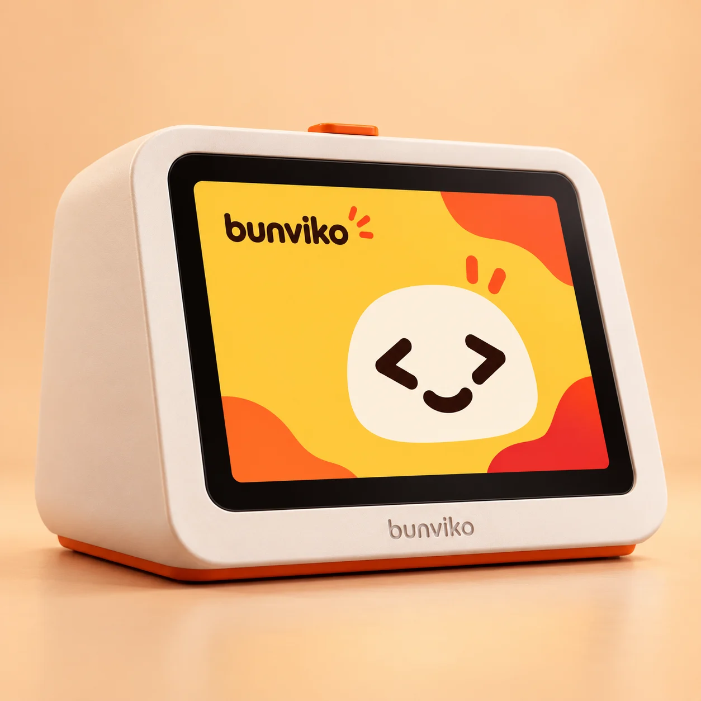
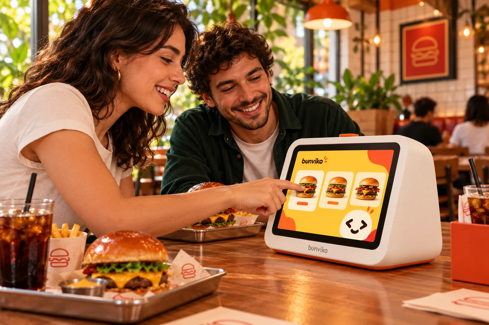
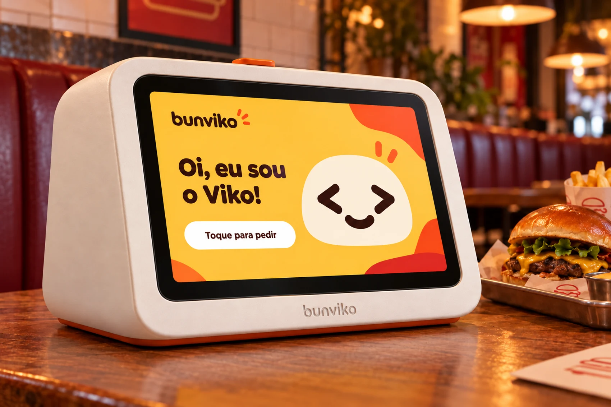
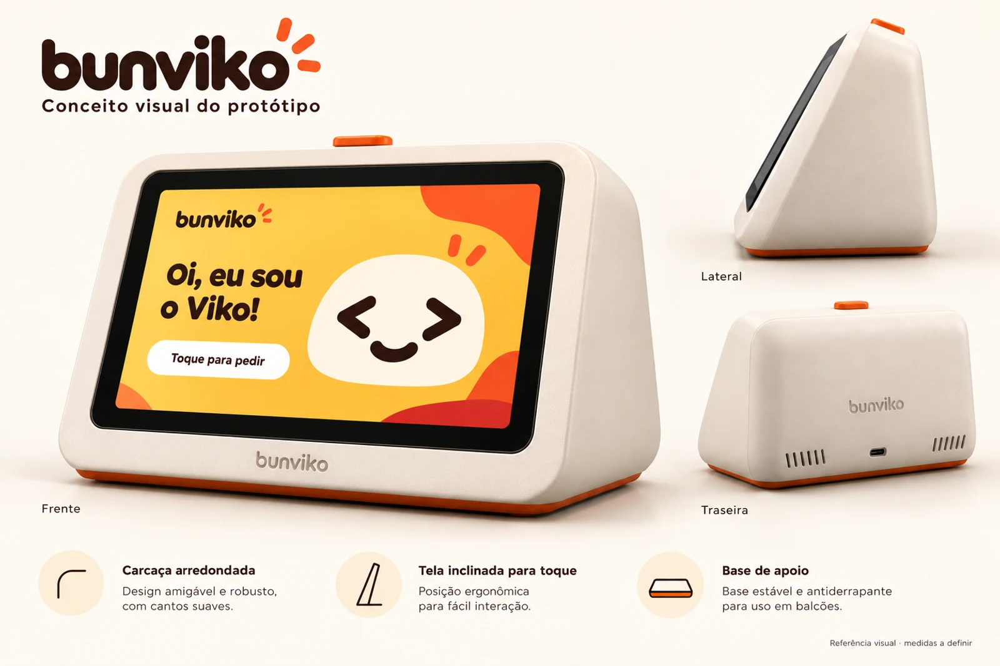

Boas-vindas com o Viko
Oi! Bora pedir?Toque para começar ↗
Seu cliente escolhe. O Viko acompanha.
Uma experiência feita para a sua casa.
A Bunviko une um dispositivo de mesa personalizado e uma experiência de pedidos com a cara da sua lanchonete.
Veja de perto ↗O cliente escolhe antes de adicionar à sacola.

Explore o cardápio da casa com categorias claras e escolhas ao alcance dos dedos.
Quero experimentar ↗
Do balcão à mesa.Um personagem acolhedor. Uma tela que convida. Um produto que faz parte do ambiente, com o jeito e a personalidade da sua casa.
Conheça o Viko ↗
Um conceito de aparelho de mesa que combina tela, personalidade e uma forma própria de receber.

Carcaça arredondada e identidade própria para compor o ambiente.
Tela inclinada e botão na parte superior do aparelho.
Marca, cores e mascote conectados à experiência do cliente.
Os olhos vêm do código. O jeitinho vem de quem gosta de receber. Eu sou a personalidade da Bunviko, do primeiro oi à escolha do pedido.
Bunviko e Viko: uma marca que conecta comida, tecnologia e acolhimento.
Baixar logo SVG ↗Conheça o fluxo de pedido e navegue pela demonstração interativa.
Testar experiência ↗Validar a experiência com restaurantes e definir o hardware para o protótipo físico.
Um conceito de solução de autoatendimento para lanchonetes e hamburguerias, unindo um aparelho personalizado e um sistema para o cliente escolher e montar o pedido.
O cliente da lanchonete ou hamburgueria. A experiência começa nas boas-vindas e segue para a escolha e a personalização dos itens.
Sim. A demonstração no navegador permite explorar o cardápio ilustrativo, personalizar um burger e montar uma sacola. Ela não envia pedidos reais nem faz cobranças.
Abrir demonstração ↗A Bunviko está na fase de conceito e protótipo. As imagens mostram a direção visual do aparelho; medidas, componentes e produção ainda serão definidos.
Os preços e o modelo comercial ainda estão em definição. Não há contratação ou pagamento disponível nesta versão de apresentação.
O Viko dá personalidade à interface e ajuda a criar uma recepção simpática para o cliente, com olhos inspirados em símbolos de código.